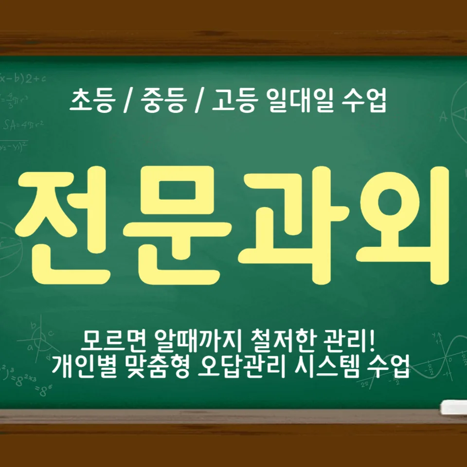

PageType : SUBJECT
URL : /경기도과외/용인시과외/수지구과외/성복동과외/성복동수학과외/
지역 교육환경이 수학 학습에 미치는 영향
성복동수학과외를 찾는 학생들은 대체로 학교 수업 외에 학습 시간을 더 확보하려는 경향이 크고, 그만큼 “수학은 꾸준히 다져야 한다”는 분위기가 가정과 학원 사이에서 자연스럽게 이어집니다. 특히 성복동수학과외처럼 보충 학습을 선택한 경우, 단원 진도 속도와 이해 정도의 차이를 어떻게 메울지부터 계획하는 태도가 먼저 생깁니다.
학교 수업은 같은 범위를 다루더라도 학생 개별 이해가 다르기 때문에, 성복동수학과외에서는 수업 이후에 남는 질문을 정리하는 흐름이 중요해집니다. 성복동수학과외의 학습 환경에서는 “어느 지점에서 막혔는지”를 말로 표현하도록 유도하는 편이라, 학습 공백이 감정적 좌절로 번지기 전에 잡아두는 효과가 관찰됩니다.
지역 학습 문화가 학습 밀도를 높이면 시험 직전의 벼락감각이 줄어드는 대신, 초기에 개념을 놓치지 않는 태도가 더 요구됩니다. 그래서 성복동수학과외를 통해 학생들은 학교 수업–자습–복습을 한 덩어리로 연결해 생각하는 습관을 갖추게 됩니다.
학교별 평가 방식과 학습 방향
학교마다 내신은 같은 과목이라도 서술형 비중, 과정 평가 비중, 단원 연계 문항 구성 방식이 달라서 준비 방식도 달라집니다. 성복동수학과외를 병행하는 학생들은 “정답만 맞히는 공부”보다, 어떤 생각의 흐름으로 답에 도달했는지를 스스로 점검하는 방향으로 학습을 조정하는 경우가 많습니다.
수행평가가 있는 학교에서는 수업 중 활동이나 발표·기록 과정이 성적에 반영되므로, 수학이 단순 문제풀이가 아니라 사고 기록으로 확장된다는 점을 먼저 경험합니다. 이 과정에서 성복동수학과외는 자료를 정리하고 표현하는 습관, 즉 공부습관을 학습 성과의 일부로 다루게 됩니다.
평가 방식이 바뀌면 시험을 보는 마음가짐도 달라집니다. 학생들은 시험 전에 단순 암기량을 늘리기보다, 실수 유형을 줄이는 연습과 오답 정리를 학습 방향의 중심에 두기 시작합니다.
학생들이 수학을 어려워하는 주요 원인
많은 학생이 수학을 어려워하는 순간은 “개념이 낯설어지는 시기”와 “연결이 끊겼다는 걸 스스로 알아차리는 시기”가 겹칠 때입니다. 이때는 성복동수학과외에서처럼 학습 흐름을 끊지 않고, 이전 단계에서 무엇이 빠졌는지부터 확인하는 방식이 도움이 됩니다.
어려움이 오래 지속되면 단순 실수가 누적되어 자신감이 흔들립니다. 성복동수학과외를 통해 관찰되는 변화는, 학생이 틀린 문제를 ‘못해서 틀렸다’고 끝내지 않고 ‘어떤 조건을 놓쳤는지’로 사고를 옮기는 과정입니다. 이 전환이 오답을 반복하지 않는 첫 단추가 됩니다.
또 다른 원인은 학습 부담이 갑자기 커지는 구간에서 공부습관이 따라가지 못하는 데 있습니다. 학년이 올라가면 시험 범위가 넓어지고 문제 유형이 섞이면서, 이전 방식대로 공부하면 시간이 부족하다고 느끼기 쉬워집니다.
학년 변화에 따른 수학 학습의 차이
학년이 올라갈수록 수학은 점점 “이해–적용–확장”의 형태로 쌓이는데, 이 연결이 매끄럽지 않으면 학생의 학습 동력은 급격히 떨어집니다. 성복동수학과외를 선택한 학생들은 대체로 중간에 흔들리는 시기를 지나며 공부 전략을 다시 세우고, 시험 준비가 계획표로 구체화됩니다.
특정 학기부터는 수행평가와 내신에서 요구하는 표현 방식이 달라져 사고를 문장이나 과정으로 나타내야 할 때가 생깁니다. 성복동수학과외에서는 이 시기에 개념의 의미를 다시 정리해 두고, 문제 해결 과정을 점검하는 연습을 먼저 강화합니다.
마지막으로, 시험 기간에는 학습 패턴이 바뀌는 현상이 흔합니다. 학생들은 초반에는 진도에 집중했다가 후반에는 복습과 오답에 더 많은 시간을 쓰며, 그 과정에서 자기주도학습의 방향이 잡히기도 합니다.
꾸준한 학습이 실력으로 이어지는 과정
성적과 별개로 수학 실력은 반복되는 확인에서 자라납니다. 성복동수학과외를 꾸준히 병행한 학생들은 복습이 “남는 시간에 하는 것”에서 “다음 학습을 가능하게 만드는 과정”으로 인식이 바뀌는 경우가 많습니다.
학부모가 가장 자주 고민하는 지점도 여기에서 나타납니다. 시험이 끝난 뒤에도 계속 복습을 해야 하는 이유를 설명할 때, 성복동수학과외에서는 단원 간 연결과 실수 누적의 구조를 학생의 언어로 풀어주는 방식이 효과적이라고 봅니다.
결국 자기주도학습은 의지만으로 유지되지 않고, 매번 무엇을 확인해야 하는지 목록이 생길 때 단단해집니다. 학생은 “다음에 틀릴 가능성이 있는 부분”을 스스로 골라 다시 보는 습관을 통해 사고력이 안정적으로 자랍니다.
문제 해결력을 키우는 학습 습관
문제 해결은 정답을 얻는 순간보다, 답에 이르는 생각의 경로를 점검하는 습관에서 시작됩니다. 성복동수학과외에서는 수학 개념을 이해한 뒤 바로 적용만 하게 두지 않고, 조건을 바꾸었을 때 사고가 어떻게 달라지는지까지 관찰하게 합니다.
시간을 효율적으로 쓰는 방법도 여기서 분명해집니다. 같은 시간이라도 무작정 문제를 늘리면 오답이 늘어나는 반면, 성복동수학과외처럼 학습 과정을 정리하는 루틴이 있으면 학생은 문제 해결 과정에서 멈칫하는 지점을 더 빠르게 파악합니다.
또한 시험 전에는 난도를 올리기보다 “내가 무엇을 놓치고 있는지”를 먼저 확인하는 편이 유리합니다. 이 확인이 오답 분석으로 이어지고, 반복되는 실수의 패턴이 줄어들면서 사고력이 눈에 띄게 정리됩니다.
복습과 학습 관리가 중요한 이유
복습은 단순 재확인이 아니라, 기억의 구조를 재배열하는 과정입니다. 성복동수학과외에서 학생들이 느끼는 변화는 “예전에 했던 내용이 왜 갑자기 안 보이지?”라는 혼란이 줄어드는 방향으로 나타납니다.
학습 관리는 시험 기간의 긴장감을 완화하는 장치가 되기도 합니다. 학생들은 계획적인 공부습관을 유지하려고 노력하면서도, 실제로는 하루 단위의 실천과 피드백이 반복될 때 가장 안정감을 얻습니다. 이 안정감이 자기주도학습의 기반이 됩니다.
특히 학교 내신 준비에서는 범위가 계속 겹치기 때문에, 복습이 성적을 위한 단기 작업이 아니라 수학 학습 전체의 흐름을 잇는 다리로 작동합니다. 성복동수학과외에서는 이 다리를 학생이 스스로 점검하도록 돕습니다.
수학 학습에서 확인해야 할 핵심 요소
학생이 수학을 배우며 성장하는 과정에서, 단순히 진도만 체크해서는 다음 단계로 넘어가기 어렵습니다. 그래서 아래 항목처럼 “학습의 질”을 확인하는 기준이 필요합니다. 성복동수학과외에서 강조되는 핵심은 결국 내신과 수행평가를 준비하는 태도 자체가 학습 습관으로 굳어지는지입니다.
- 학교 수업과 시험 범위에 맞는 학습 계획을 세우고 있는지 확인합니다.
- 개념을 암기하는 데 그치지 않고 문제 해결 과정에 활용하고 있는지 점검합니다.
- 틀린 문제를 다시 풀어보며 실수의 원인을 꾸준히 분석합니다.
- 단기 성과보다 지속적인 복습과 학습 습관을 유지하고 있는지 살펴봅니다.
이 요소들이 자리 잡히면 학생은 시간이 지나도 흔들리지 않는 공부습관을 만들고, 학년이 올라가며 달라지는 부담에도 비교적 능동적으로 대응합니다. 성복동수학과외가 반복 학습을 통해 사고력을 정리하는 데 집중하는 이유도 바로 이 지점에 있습니다.
자주 묻는 질문
수학 학습은 언제부터 체계적으로 준비하는 것이 좋을까요?
단원 사이 연결이 끊기기 쉬운 시점을 기준으로, 개념을 이해한 뒤 복습 루틴이 붙는 시기부터 정리하는 편이 안정적입니다. 성복동수학과외에서는 학교 진도와 시험 범위를 함께 보며 “다음에 막힐 지점”을 먼저 찾아 체계를 잡습니다.
학교 내신과 수행평가는 어떻게 함께 준비하면 좋을까요?
내신은 범위와 문항 유형을, 수행평가는 수업 중 활동과 기록 방식의 습관을 같이 점검해야 합니다. 성복동수학과외에서는 수학 학습이 시험 서류 형태로 이어지도록 과정 이해와 표현 연습을 함께 다룹니다.
수학 개념이 부족한 학생도 학습 흐름을 따라갈 수 있을까요?
가능합니다. 다만 속도를 따라가기보다 “어느 조건에서 생각이 끊겼는지”를 먼저 찾고, 복습으로 연결을 회복해야 합니다. 성복동수학과외에서는 오답을 출발점으로 삼아 개념-적용의 간격을 줄이는 방식으로 접근합니다.
문제 해결력은 어떤 과정을 통해 향상될 수 있을까요?
새 문제를 푸는 횟수보다, 해결 과정에서 스스로 확인하는 질문이 늘어날 때 성장합니다. 성복동수학과외에서는 사고력의 흐름을 관찰하고, 같은 실수가 반복되지 않도록 오답 분석을 학습 습관으로 고정합니다.
꾸준한 학습 습관은 어떻게 만들어갈 수 있을까요?
거창한 계획보다 짧은 복습과 실수 점검이 반복되도록 설계하는 것이 핵심입니다. 시험 전 패턴 변화가 생기더라도 계획적인 공부습관이 유지되면 안정적으로 이어지며, 성복동수학과외는 그 루틴을 학생이 스스로 유지할 수 있게 돕는 데 초점을 둡니다.
